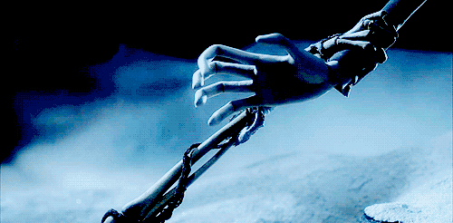
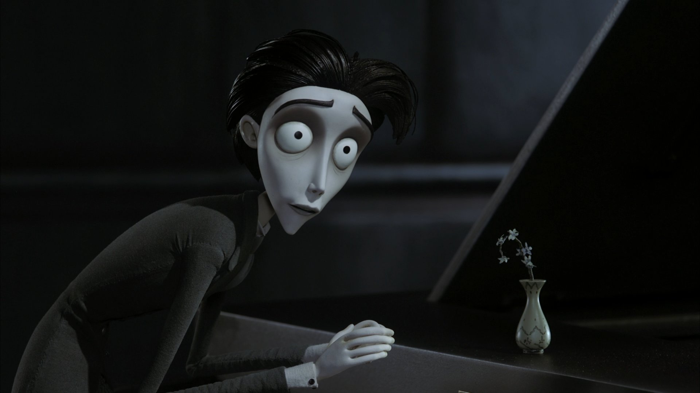

Виктор Ван Дорт (англ. Victor van Dort) — жених Виктории, сын богатых рыботорговцев. Робкий и добрый парень, очень худощав, умеет играть на фортепиано. Во время репетиции свадебной церемонии от волнения забыл слова клятвы и устроил в доме невесты большой беспорядок, в том числе нечаянно поджег платье будущей тёщи. В лесу, произнеся клятву полностью, Виктор случайно пробуждает к жизни Эмили, невесту, погибшую на этом месте много лет назад. Но Виктор не желает становиться её женихом, так как любит Викторию.
